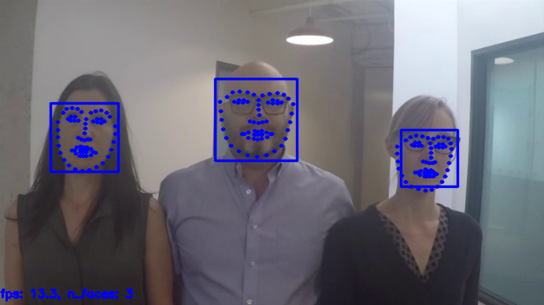

Frontal Face Detector
Contents
Frontal Face Detector#
정면 얼굴 검출기
https://ibug.doc.ic.ac.uk/resources/facial-point-annotations/
HOG 기반의 얼굴 포인트 검출 모델
의존성 패키지 설치#
OpenCV for Python
opencv-python: 메인 모듈
opencv-contrib-python: 확장 모듈
C++ Tookit for Machine Learning
# 설치
!pip install -q --upgrade pip
!pip install -q opencv-python opencv-contrib-python
!pip install -q dlib
모델 다운로드#
!rm -f /tmp/shape_predictor_68_face_landmarks.dat*
!wget -q -P /tmp https://raw.githubusercontent.com/davisking/dlib-models/master/shape_predictor_68_face_landmarks.dat.bz2
!bzip2 -d /tmp/shape_predictor_68_face_landmarks.dat.bz2
!ls -al /tmp | grep shape_predictor_68_face_landmarks
-rw-r--r-- 1 skp skp 99693937 7월 10 11:48 shape_predictor_68_face_landmarks.dat
테스트 데이터 다운로드#
https://github.com/intel-iot-devkit/sample-videos/raw/master/face-demographics-walking-and-pause.mp4
!rm -f /tmp/face-demographics-walking-and-pause*
!wget -q -P /tmp https://github.com/intel-iot-devkit/sample-videos/raw/master/face-demographics-walking-and-pause.mp4
!ls -al /tmp | grep face-demographics-walking-and-pause
-rw-r--r-- 1 skp skp 9406029 7월 10 11:49 face-demographics-walking-and-pause.mp4
from IPython.display import clear_output, Image, display
import cv2, time, dlib
import numpy as np
curr_time = 0
def getFPS():
global curr_time
if curr_time == 0:
curr_time = time.time()
fps = 0
else:
last_time = curr_time
curr_time = time.time()
fps = 1. / (curr_time - last_time)
return fps
def putText(frame, text):
height, width, _ = frame.shape
font = cv2.FONT_HERSHEY_SIMPLEX
font_scale = 0.5
org = (0, height - 10)
font_color = (255, 0, 0)
thickness = 2
cv2.putText(frame, text, org, font, font_scale, font_color, thickness)
return frame
def resize(frame, scale=0.2):
height, width, _ = frame.shape
frame = cv2.resize(frame, (int(width * scale), int(height * scale)))
return frame
def drawFaceRectangle(frame, face):
pt1 = (face.left(), face.top())
pt2 = (face.right(), face.bottom())
color = (255, 0, 0)
thickness = 2
line_type = cv2.LINE_AA
frame = cv2.rectangle(frame, pt1, pt2, color, thickness, line_type)
return frame
def drawFaceShape(frame, shape):
shape_2d = np.array([[p.x, p.y] for p in shape.parts()])
radius=1
color=(255, 0, 0)
thickness=2
line_type=cv2.LINE_AA
for s in shape_2d:
center=tuple(s)
cv2.circle(frame, center, radius, color, thickness, line_type)
return frame
def getImage(frame):
ret, png = cv2.imencode('.png', frame)
return Image(png)
face_detector = dlib.get_frontal_face_detector()
shape_predictor = dlib.shape_predictor('/tmp/shape_predictor_68_face_landmarks.dat')
video = cv2.VideoCapture("/tmp/face-demographics-walking-and-pause.mp4")
fidx = 0
while(True):
try:
clear_output(wait=True)
ret, frame = video.read()
if not ret:
break
fidx += 1
frame = resize(frame, 0.9)
faces = face_detector(frame)
n_faces = len(faces)
for face in faces:
frame = drawFaceRectangle(frame, face)
face_shape = shape_predictor(frame, face)
frame = drawFaceShape(frame, face_shape)
# compute face center
shape_2d = np.array([[p.x, p.y] for p in face_shape.parts()])
center_x, center_y = np.mean(shape_2d, axis=0).astype(np.int)
# compute face boundaries
min_coords = np.min(shape_2d, axis=0)
max_coords = np.max(shape_2d, axis=0)
# compute face size
face_size = int(max(max_coords - min_coords) * 1.5)
fps = getFPS()
text = f"fps: {fps:.1f}, n_faces: {n_faces}"
frame = putText(frame, text)
img = getImage(frame)
display(img)
#time.sleep(0.001)
except KeyboardInterrupt:
# KeyboardInterrupt 를 raise 하기 위해서는 I 키를 두번 누름
video.release()
